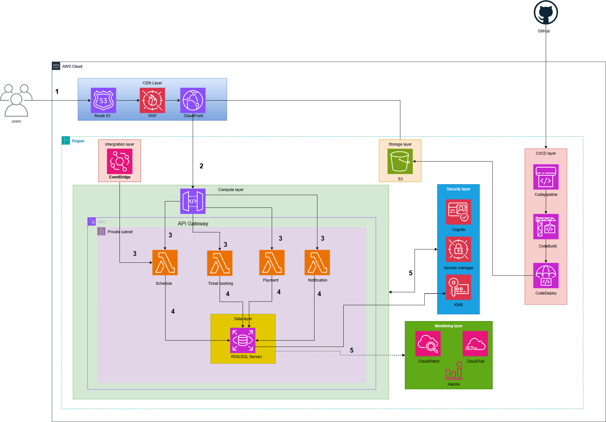

Thành phố Hồ Chí Minh đang đối mặt với các thách thức lớn về giao thông, bao gồm tắc nghẽn, ô nhiễm và áp lực dân số đô thị hóa.
Dự án Đường sắt Đô thị được xem là bước đột phá trong việc xây dựng hệ thống giao thông thông minh, bền vững và thân thiện với môi trường.
Bản đề xuất này trình bày một kiến trúc đám mây toàn diện dựa trên AWS, được thiết kế để hỗ trợ các chức năng cốt lõi như:
Kiến trúc tuân thủ các nguyên tắc serverless, event-driven, và CI/CD automation, bảo đảm:
Mục tiêu tổng quát:
Xây dựng hạ tầng kỹ thuật số đáng tin cậy, an toàn, và có khả năng mở rộng cho hệ thống Đường sắt Đô thị TP. Hồ Chí Minh trên nền tảng AWS Cloud.
Mục tiêu cụ thể:
| Thành phần | Mô tả |
|---|---|
| Địa điểm | Tuyến Metro số 1 (Bến Thành – Suối Tiên), TP.HCM |
| Người dùng mục tiêu | Hành khách, nhân viên vận hành, quản trị viên |
| Thời gian triển khai | 12 năm (bao gồm triển khai & vận hành dài hạn) |
| Giai đoạn 1 | Đặt vé, xác thực, lịch trình, thanh toán |
| Giai đoạn mở rộng | Phân tích dự đoán, IoT giám sát, tối ưu hành khách |
| ID | Requirement | Priority |
|---|---|---|
| FR-01 | Users can book tickets and pay online | High |
| FR-02 | Real-time schedule updates via API | High |
| FR-03 | Automatic maintenance alerting | Medium |
| FR-04 | Admin can view passenger analytics | Medium |
| FR-05 | Multi-language (EN, VN) support | Low |
Hệ thống được xây dựng theo mô hình đa lớp (multi-tier), phi máy chủ (serverless), và tự động (automated), đảm bảo khả năng mở rộng động, vận hành tin cậy và bảo mật toàn diện.
| Layer | Service | Role |
|---|---|---|
| Frontend | CloudFront + S3 | Static hosting, caching, HTTPS delivery |
| API Layer | API Gateway + Lambda | Business logic, event-driven functions |
| Data | RDS + S3 + DynamoDB | Persistent and analytical data storage |
| Security | WAF + Cognito + KMS | Authentication, encryption, protection |
| Monitoring | CloudWatch + GuardDuty | Metrics, alerts, and anomaly detection |
BookingServiceLambda: Xử lý đặt vé.PaymentLambda: Tích hợp thanh toán VNPay/MoMo.ScheduleLambda: Cập nhật lịch trình.NotificationLambda: Gửi thông báo (SNS, email, SMS).User -> CloudFront ->API Gateway -> Lambda -> RDS
|v
EventBridge -> SNS/Email Notification
|v
CloudWatch -> Admin Dashboard
| Giai đoạn | Thời gian | Hạng mục chính |
|---|---|---|
| 1 | Tuần 1–2 | Thiết lập Route 53, CloudFront, API Gateway, Lambda, RDS |
| 2 | Tuần 3–4 | Phát triển đặt vé, xác thực (Cognito, Lambda, EventBridge) |
| 3 | Tuần 5–6 | Tích hợp thanh toán, giám sát CloudWatch, cấu hình WAF |
| 4 | Tuần 7–8 | CI/CD (CodePipeline, CodeBuild, CodeDeploy) |
| 5 | Mở rộng | Phân tích dữ liệu (Athena, QuickSight) |
| Thành phần | Dịch vụ | Ước tính (USD/tháng) |
|---|---|---|
| Mạng & CDN | Route 53, CloudFront, WAF | $15 |
| Backend Serverless | Lambda, API Gateway, EventBridge | $20 |
| Dữ liệu & Lưu Trữ | RDS, S3 | $35 |
| CI/CD | CodePipeline, CodeBuild, CodeDeploy | $10 |
| Bảo mật & Giám sát | CloudWatch, CloudTrail, Cognito, KMS | $15 |
| Tổng cộng | — | ≈ $95–100/tháng |
Nhân sự:
| Rủi ro | Giải pháp |
|---|---|
| Gián đoạn mạng AWS | Thiết lập Multi-AZ, failover tự động |
| Quá tải Lambda | Bật autoscaling và giới hạn timeout |
| Tấn công bảo mật | Sử dụng WAF, IAM least privilege, KMS |
| Sai lệch dữ liệu | Tự động sao lưu và khôi phục RDS |
| Lỗi triển khai | CI/CD rollback và CloudFormation drift detection |
| Risk | Likelihood | Impact | Mitigation |
|---|---|---|---|
| Network outage | Medium | High | Multi-AZ + Failover |
| API overload | High | Medium | Lambda concurrency + autoscaling |
| Data breach | Low | High | KMS encryption + WAF |
| CI/CD failure | Medium | Low | Rollback + versioning |
Hệ thống Đường Sắt Đô Thị Trên AWS là nền tảng chiến lược giúp chuyển đổi số ngành giao thông công cộng tại TP.HCM.
Với kiến trúc serverless – event-driven – CI/CD automation, giải pháp này đáp ứng các yêu cầu hiện đại về bảo mật, hiệu suất và chi phí.
Đây không chỉ là dự án kỹ thuật, mà còn là bước tiến hướng tới thành phố thông minh trong tương lai.
| KPI | Target | Measurement Tool |
|---|---|---|
| System Availability | ≥ 99.95% | CloudWatch uptime metrics |
| API Latency | < 300 ms | CloudWatch logs |
| Ticket Processing | 10,000+/day | Lambda invocation count |
| Cost Optimization | < $100/month | AWS Cost Explorer |
| Security Compliance | 100% | GuardDuty & IAM Audit |
| Category | Services Used | Purpose |
|---|---|---|
| Networking | Route 53, CloudFront | DNS, CDN, HTTPS |
| Compute | Lambda | Serverless compute |
| API | API Gateway | REST API endpoints |
| Database | RDS (SQL Server) | Transactional data |
| Storage | S3 + Glacier | File storage & archival |
| Security | Cognito, WAF, KMS, Secrets Manager | Authentication & protection |
| DevOps | CodePipeline, CodeBuild, CodeDeploy | CI/CD automation |
| Monitoring | CloudWatch, CloudTrail, GuardDuty | Observability & compliance |
🖼️ Hình minh họa:
